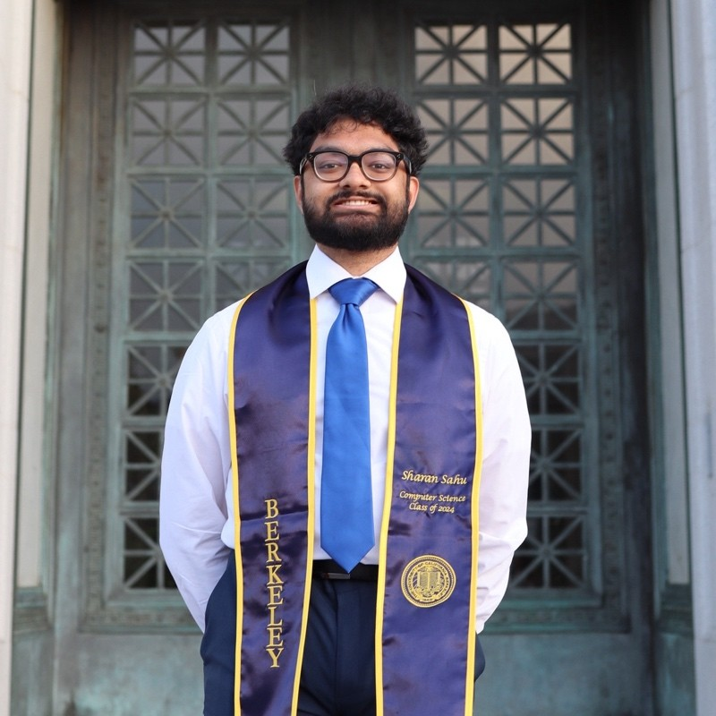
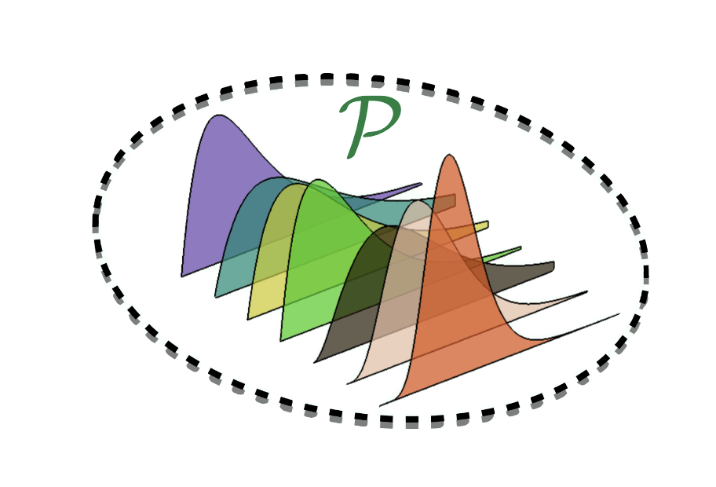
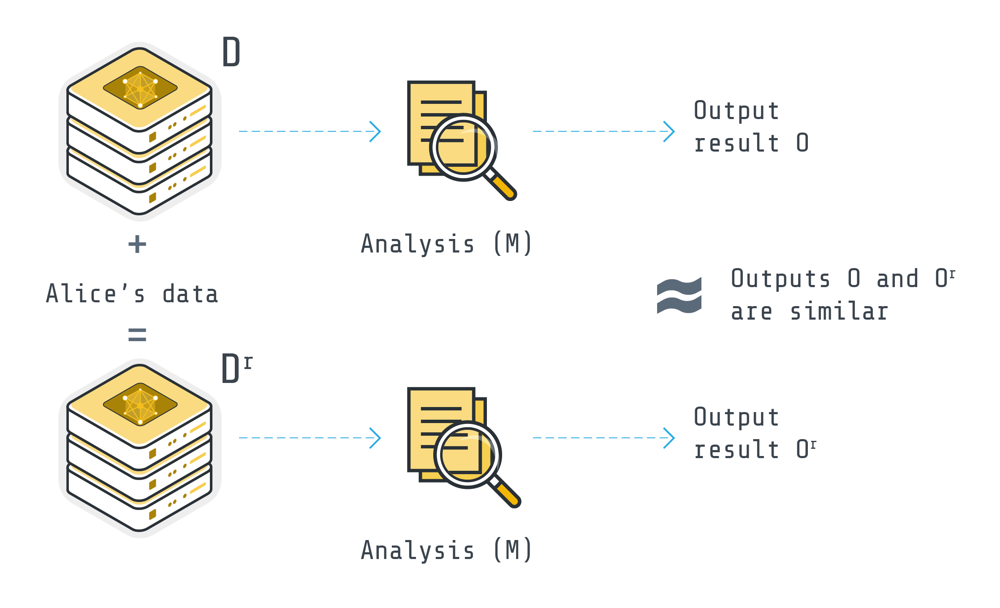

|
Sharan Sahu I am a second-year PhD student in Statistics and Machine Learning at Cornell University. Broadly, I am interested in statistical machine learning and using statistical/machine learning tools to improve decision-making and bridge the gap between machine learning methodology and practice by making these methods more reliable, human-compatible, statistically rigorous, and deployable. I am fortunate to be supported by a Cornell University Fellowship Before joining Cornell University, I was an undergraduate at UC Berkeley where I studied Computer Science. I was very fortunate to be advised by Iain Carmichael and Ryan Tibshirani working on statistics and machine learning problems in computational precision medicine and statistical learning theory. If you're an undergrad or Master's student at Cornell and are interested in collaborating, please reach out! |
 |
{kind=link}
ResearchI am interested in theory and methods in the areas of high-dimensional statistics, stochastic optimization, reinforcement learning, deep learning, language and diffusion models, and differential privacy.

DRO–REBEL: Fast and Robust Policy Optimization for LLM Alignment via Distributional Regression

Towards Optimal Differentially Private Regret Bounds in Linear Markov Decision Processes |
Presentations and Talks
Towards Optimal Differentially Private Regret Bounds in Linear MDPs
The Machine Learning Problems Behind Large Language Models: Self-Supervision, Fine-Tuning, and
Reinforcement Learning
Unlocking the Power of Databases: The Crucial Role of Theory and Indices in Scalable Vector Databases for Machine Learning |
Miscellanea![Thumbnail for Introduction to [Topic of Video 1]](https://img.youtube.com/vi/WdbdsMnriwE/hqdefault.jpg)
Interview with Aman Manazir: From USAMO Math to Quant Trading, ML PhD, and AI Startups ![Thumbnail for Deep Dive into [Topic of Video 2]](https://img.youtube.com/vi/wkRhrF1T7qQ/hqdefault.jpg)
Interview with Sithija Manage: My PhD Application Journey |
|
Template from here. |